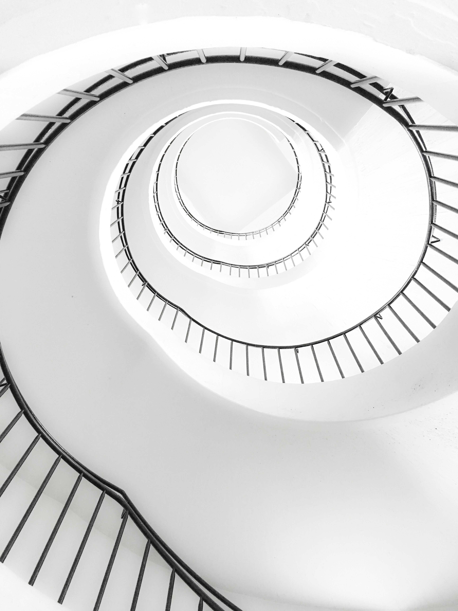

At the start of every project, we customise a detailed project plan together with you to set expectations, ensure alignment, and define key milestones and deliverables. Experience tells us the best solutions are the ones co-ideated with clients. We incorporate your ideas with our broad level of expertise to create memorable experiences for your brands & products.
View DetailLorenzo Morena
Founder
